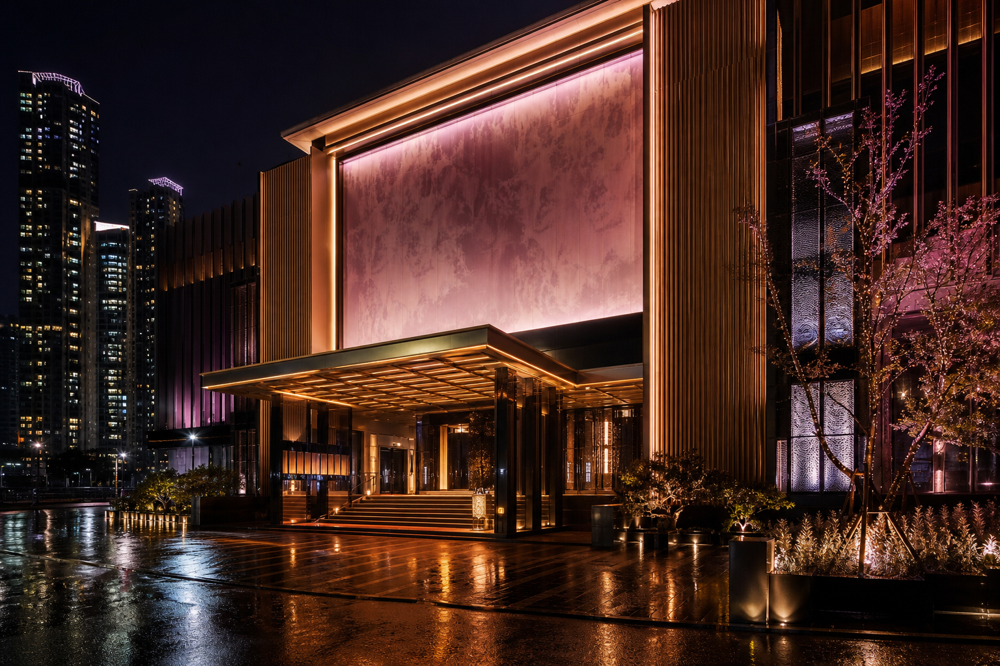

FAQ · Haeundae
해운대 고구려 처음 검색할 때 자주 묻는 질문 10가지 정리
해운대 고구려를 처음 알아보면 검색만으로는 파악이 안 되는 부분이 많습니다. 가격은 어떤 구조인지, 예약은 어떻게 하는지, 복장 기준은 있는지 — 자주 반복되는 질문을 모아 정리했습니다.

해운대 고구려를 처음 검색하면 이름은 자주 보이는데 구체적인 정보는 잘 나오지 않는다고 느끼는 분이 많습니다. 가격이 얼마인지, 어떻게 예약하는지, 복장은 어때야 하는지, 몇 시에 가야 하는지 — 기본적인 것조차 검색만으로 해결이 안 되는 경우가 많습니다.
이 글에서는 해운대 고구려에 대해 처음 알아보는 사람들이 가장 자주 묻는 질문 10가지를 정리하고, 각각에 대해 판단 기준이 되는 답변을 제공합니다.
Q1. 해운대 고구려는 어떤 곳인가요?
해운대 고구려는 부산 해운대 지역에서 오래 알려진 대형 프리미엄 룸싸롱 브랜드입니다. 일반적인 소규모 룸과 달리 수십 개의 룸을 운영하며, 다수의 스태프가 상주하는 규모를 갖추고 있습니다. 규모가 큰 만큼 인원, 분위기, 시간대에 따라 다양한 조합이 가능합니다.
Q2. 가격은 어느 정도인가요?
해운대 고구려의 가격은 단일 금액이 아니라 구성에 따라 달라집니다. 기본 세트(양주 + 안주 + TC)를 기준으로 가격이 나뉘며, 추가 주류나 연장 여부에 따라 최종 금액이 변동됩니다. "얼마예요?"보다 "기본 세트 기준으로 어떤 구성인가요?"라고 묻는 것이 정확한 답을 받는 방법입니다.
Q3. 예약은 어떻게 하나요?
보통 전화 또는 카카오톡 등 메신저로 문의합니다. 방문 날짜, 시간, 인원, 목적(접대/모임/여행)을 함께 전달하면 그에 맞는 구성을 안내받을 수 있습니다. 주말이나 연휴에는 예약이 빠르게 마감되므로, 하루 이상 전에 연락하는 것이 안정적입니다.
Q4. 픽업 서비스가 있나요?
대형 업장은 픽업 서비스를 제공하는 경우가 많습니다. 숙소나 식사 장소에서 차량을 보내주는 방식이며, 예약 확정 시 픽업 장소와 시간을 함께 조율하면 됩니다. 술자리가 포함된 일정이라 직접 운전이 어렵기 때문에, 픽업을 적극 활용하는 것이 편리합니다.
Q5. 복장 기준이 있나요?
엄격한 드레스 코드가 있는 것은 아니지만, 프리미엄 업장인 만큼 너무 캐주얼한 복장(반바지, 슬리퍼 등)은 분위기와 맞지 않을 수 있습니다. 비즈니스 캐주얼 수준이면 어디서든 무난합니다. 접대 자리라면 셔츠나 자켓 정도가 적합합니다.
Q6. 몇 시에 가는 것이 좋은가요?
방문 목적에 따라 다릅니다. 비즈니스 접대처럼 조용한 자리라면 저녁 7~8시경이 적합하고, 활기 있는 분위기를 원한다면 밤 9~10시 이후가 더 맞습니다. 너무 이른 시간에 가면 분위기가 아직 갖춰지지 않은 경우도 있으므로, 문의할 때 추천 시간대를 물어보는 것이 좋습니다.
Q7. 체류 시간은 보통 얼마나 되나요?
기본 세트 기준으로 2~3시간 정도가 일반적입니다. 추가 주류를 주문하면 체류가 연장되며, 일행의 분위기에 따라 유연하게 조절됩니다. 처음이라면 기본 구성으로 시작한 뒤 분위기를 보며 결정하는 것이 부담이 적습니다.
Q8. 인원이 적어도(2명) 방문 가능한가요?
가능한 경우가 많지만, 대형 업장 특성상 소규모 인원에 맞는 룸이 한정되어 있을 수 있습니다. 2명 방문이 가능한지, 소규모 룸이 있는지 예약 시 확인하는 것이 좋습니다. 인원이 적으면 기본 세트 구성이 달라질 수도 있습니다.
Q9. 해운대 고구려와 일반 룸싸롱의 차이는 무엇인가요?
가장 큰 차이는 규모입니다. 소규모 업장은 룸 수가 적고 선택의 폭이 좁지만, 대형 업장은 다양한 룸 타입과 분위기 옵션을 제공할 수 있습니다. 또한 스태프 수가 많아 매칭의 폭이 넓고, 운영 시스템이 체계적인 경우가 많습니다. 다만 규모가 크다고 해서 반드시 좋은 것은 아니며, 내 목적에 맞는지가 더 중요합니다.
Q10. 문의할 때 어떤 정보를 준비해야 하나요?
효율적인 문의를 위해 준비하면 좋은 정보는 다섯 가지입니다.
- 방문 날짜와 시간대 — 요일·시간에 따라 예약 상황이 다릅니다
- 인원수 — 룸 배정과 가격 구성의 기준이 됩니다
- 방문 목적 — 접대, 여행, 지인 모임 등 분위기 안내에 영향을 줍니다
- 대략적인 예산 — 기본 세트 기준으로 맞춤 안내를 받을 수 있습니다
- 출발 위치 — 픽업 가능 여부와 동선 안내에 필요합니다
이 다섯 가지만 정리해두면 한 번의 문의로 필요한 정보를 대부분 받을 수 있습니다. 반대로 "가격이 얼마예요?"만 물으면 맥락 없는 답변이 돌아올 수밖에 없습니다.
해운대 고구려에 대한 궁금증은 대부분 이 10가지 안에서 해결됩니다. 검색으로 찾기 어려운 정보일수록 직접 문의하는 것이 가장 정확하지만, 이 질문들을 미리 읽어두면 문의 자체가 훨씬 구체적이고 효율적으로 바뀝니다.